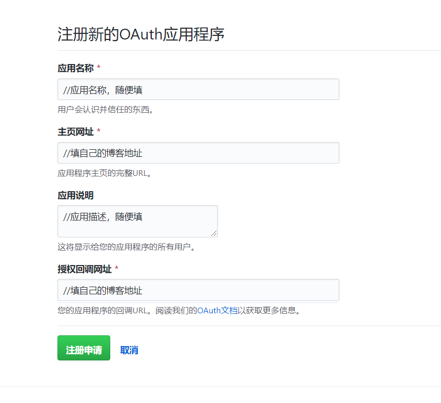
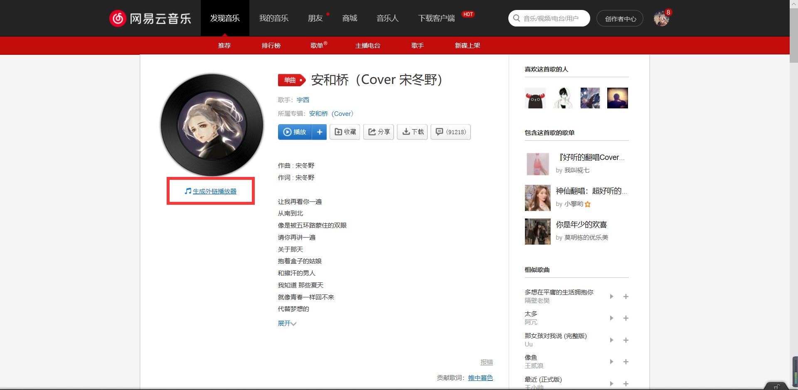
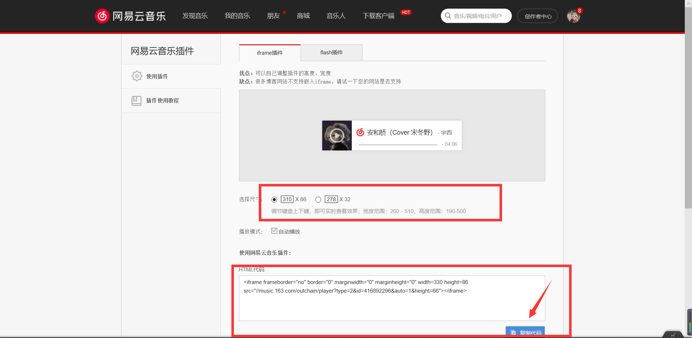

本文以作者blinkfox的matery主题为例，对主题的部分地方进行优化，进行了一些美化。
没有博客？
获取我配置好的主题？
git@github.com:MUYIio/Hexo-matery-Themes.git须知： 不同的Hexo主题的美化方式可能存在一些差异，但也相差无几，把源代码放在合适的位置就可以。
前提条件： 进行博客主题美化前需要了解Hexo博客的目录结构，主题的目录结构！请阅读官方文档。了解 HTML、CSS、JS，了解 CSS 预处理语言 Sass、Less、Stylus,有一定的前端知识最好。
添加gittalk评论插件
matery主题自带gittalk评论插件，我们只需要开启就可以了。
1.打开GitHub申请，填写信息：
Application name //应用名称，随便填
Homepage URL //填自己的博客地址
Application description //应用描述，随便填
Authorization callback URL //填自己的博客地址
2.打开themes/_config.yml下修改gitalk那里：
gitalk:
enable: true
owner: 你的github用户名
repo: 你的github用户名.github.io
oauth:
clientId: 粘贴刚刚注册完显示的字符串
clientSecret: 粘贴刚刚注册完显示的字符串
admin: 你的github用户名添加完成。
添加RSS订阅
简易信息聚合是“Really Simple Syndication”或“Richsite summary”(网站内容摘要)的中文名字。是站点用来和其他站点之间共享内容的一种简易方式。英文缩写为RSS技术。
RSS是一种信息聚合的技术，是某一站点和其他站点之间共享内容的一种简易信息发布与传递的方式，使得一个网站可以方便的调用其他提供RSS订阅服务的网站内容，从而形成非常高效的信息聚合，让网站发布的内容在更大的范围内传播。他是一种用于共享新闻和其他WEB内容的数据交换规范，也是使用最广泛的一种扩展性标识语言。
安装：
1.在本地hexo目录下右键git bash here，输入以下命令：
npm install hexo-generator-feed2.安装完成后，打开hexo目录下配置文件的_config.yml，在末尾添加以下代码：
# Extensions
## Plugins: http://hexo.io/plugins/
#RSS订阅
plugin:
- hexo-generator-feed
#Feed Atom
feed:
type: atom
path: atom.xml
limit: 203.最后打开主题配置文件themes/_config.yml，添加以下代码：
rss: /atom.xml现在RSS订阅就添加完成。
增加建站时间
1.在/themes/matery/layout/_partial/footer.ejs最后加上以下代码：
<script language=javascript>
function siteTime() {
window.setTimeout("siteTime()", 1000);
var seconds = 1000;
var minutes = seconds * 60;
var hours = minutes * 60;
var days = hours * 24;
var years = days * 365;
var today = new Date();
var todayYear = today.getFullYear();
var todayMonth = today.getMonth() + 1;
var todayDate = today.getDate();
var todayHour = today.getHours();
var todayMinute = today.getMinutes();
var todaySecond = today.getSeconds();
/* Date.UTC() -- 返回date对象距世界标准时间(UTC)1970年1月1日午夜之间的毫秒数(时间戳)
year - 作为date对象的年份，为4位年份值
month - 0-11之间的整数，做为date对象的月份
day - 1-31之间的整数，做为date对象的天数
hours - 0(午夜24点)-23之间的整数，做为date对象的小时数
minutes - 0-59之间的整数，做为date对象的分钟数
seconds - 0-59之间的整数，做为date对象的秒数
microseconds - 0-999之间的整数，做为date对象的毫秒数 */
var t1 = Date.UTC(2017, 09, 11, 00, 00, 00); // 北京时间2018-2-13 00:00:00
var t2 = Date.UTC(todayYear, todayMonth, todayDate, todayHour, todayMinute, todaySecond);
var diff = t2 - t1;
var diffYears = Math.floor(diff / years);
var diffDays = Math.floor((diff / days) - diffYears * 365);
var diffHours = Math.floor((diff - (diffYears * 365 + diffDays) * days) / hours);
var diffMinutes = Math.floor((diff - (diffYears * 365 + diffDays) * days - diffHours * hours) / minutes);
var diffSeconds = Math.floor((diff - (diffYears * 365 + diffDays) * days - diffHours * hours - diffMinutes * minutes) / seconds);
document.getElementById("sitetime").innerHTML = "本站已运行 " +diffYears+" 年 "+diffDays + " 天 " + diffHours + " 小时 " + diffMinutes + " 分钟 " + diffSeconds + " 秒";
}
siteTime();
</script>2.然后在自己想添加的地方（比如网站底部）添加以下代码：
<span id="sitetime"></span>添加404页面
1.在/source/目录下新建一个404.md，加上以下代码：
---
title: 404
date: 2019-07-19 16:41:10
type: "404"
layout: "404"
description: "页面丢失了 :("
---2.然后在/themes/matery/layout/目录下新建一个404.ejs文件，代码如下：
<style type="text/css">
/* don't remove. */
.about-cover {
height: 75vh;
}
</style>
<div class="bg-cover pd-header about-cover">
<div class="container">
<div class="row">
<div class="col s10 offset-s1 m8 offset-m2 l8 offset-l2">
<div class="brand">
<div class="title center-align">
404
</div>
<div class="description center-align">
<%= page.description %>
</div>
</div>
</div>
</div>
</div>
</div>
<script>
$('.bg-cover').css('background-image', 'url(/medias/banner/' + new Date().getDay() + '.jpg)');
</script>添加完成。
文章图片水印
1.在博客根目录下新建一个watermark.py，代码如下：
# -*- coding: utf-8 -*-
import sys
import glob
from PIL import Image
from PIL import ImageDraw
from PIL import ImageFont
def watermark(post_name):
if post_name == 'all':
post_name = '*'
dir_name = 'source/_posts/' + post_name + '/*'
for files in glob.glob(dir_name):
im = Image.open(files)
if len(im.getbands()) < 3:
im = im.convert('RGB')
print(files)
font = ImageFont.truetype('STSONG.TTF', max(30, int(im.size[1] / 20)))
draw = ImageDraw.Draw(im)
draw.text((im.size[0] / 2, im.size[1] / 2),
u'@yourname', fill=(0, 0, 0), font=font)
im.save(files)
if __name__ == '__main__':
if len(sys.argv) == 2:
watermark(sys.argv[1])
else:
print('[usage] <input>')写完一篇文章可以运行python3 watermark.py postname添加水印，如果第一次运行要给所有文章添加水印，可以运行python3 watermark.py all。
添加背景音乐
1.首先打开网易云网页版，找到想听的歌曲，然后点击生成外链：

2.选择尺寸，复制代码：

3.然后把代码直接放到文章中就可以了：

写完文章上传就可以看到了。
持续更新中…